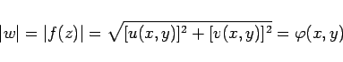
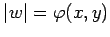
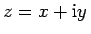
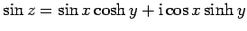
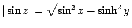

Inhalt Index DeskTop Bronstein

 Funktionentheorie Funktionen einer komplexen Veränderlichen Analytische Funktionen Eigenschaften analytischer Funktionen
Funktionentheorie Funktionen einer komplexen Veränderlichen Analytische Funktionen Eigenschaften analytischer Funktionen


Der Betrag einer analytischen Funktion, auch Modul, wird ihr Absolutbetrag
|  | (14.7) |
genannt. Die Fläche  heißt ihr Relief, d.h., |w| ist die Applikate zu jedem Punkt , also der Abstand von der z-Ebene.
Die Reliefs vieler analytischer Funktionen sind in Lit. 14.8 abgebildet.
| Beispiel A |
|
Der Modul der Funktion  beträgt . Das Relief zeigt die linke Abbildung. |
| Beispiel B |
|
Das Relief der Funktion w= e1/z zeigt die rechte Abbildung. |